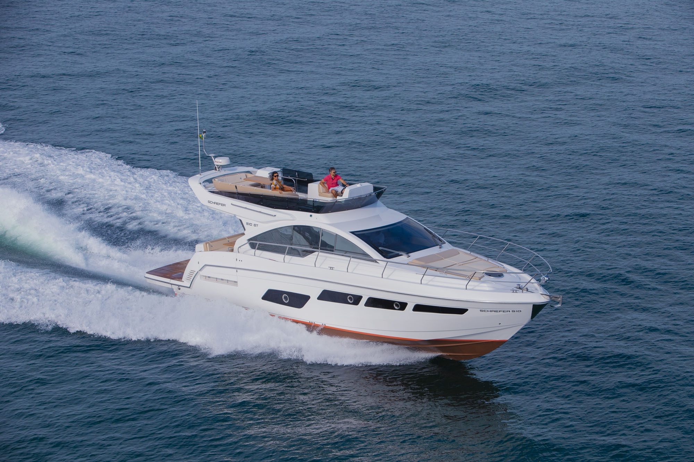

Schaefer · Design Pininfarina
510 GT Pininfarina
Assinada com a Pininfarina.
Visão geral
Flybridge com design coassinado.
15,82 m
Comprimento máximo
4,36 m
Boca máxima
A parceria com a Pininfarina — a casa de design italiana por trás de alguns dos automóveis mais reconhecíveis do século — é o que distingue esta versão. O casco e as dimensões são os da 510 GT; o desenho é outro.
A suíte a meia-nau tem 1,87 m de pé-direito, o layout pode chegar a três suítes e o deck inferior recebe sala e cozinha extras.
Diferenciais
O que distingue
este modelo.
Design Pininfarina
Projeto coassinado com a casa italiana de design.
Suíte à meia-nau com 1,87 m
Pé-direito completo na cabine principal.
Até três suítes
Opções de configuração interna.
Cozinha extra no deck inferior
Além de ampla sala.
Galeria
Schaefer 510 GT Pininfarina
Interior
pendente
pendente
Praça de popa
pendente
pendente
Cabine
pendente
pendente
Especificações
Números oficiais do estaleiro.
Conheça a 510 GT Pininfarina de perto.
Agende uma visita ou um sea trial com a equipe da NP Yachts.